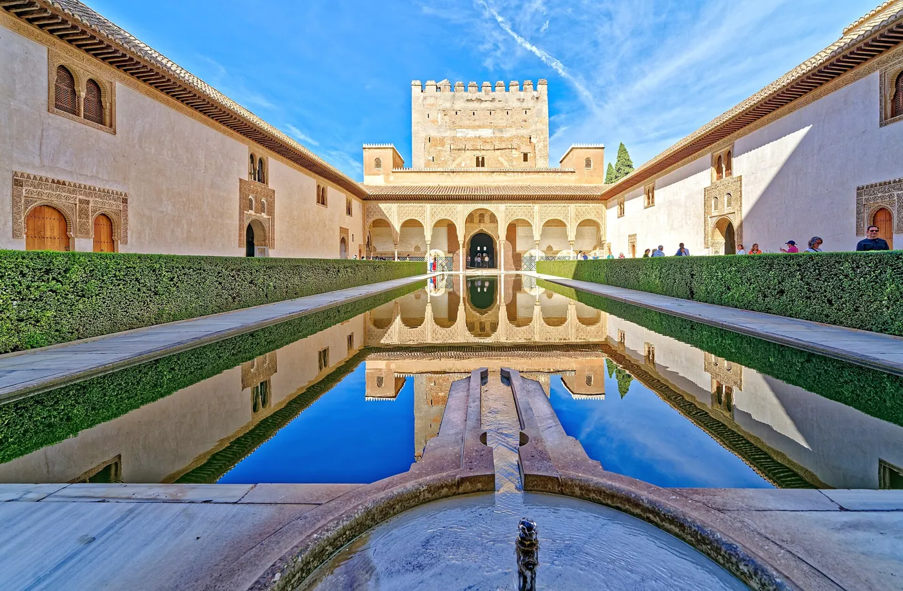
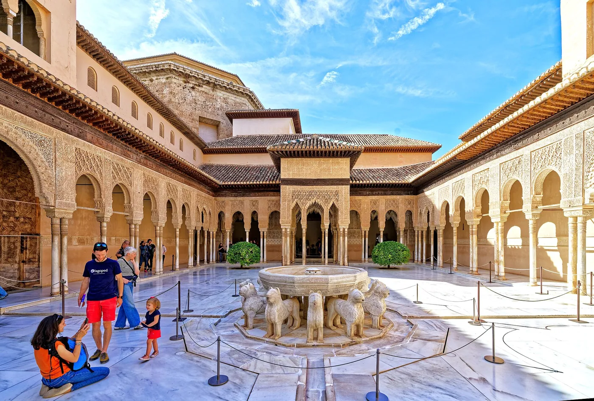
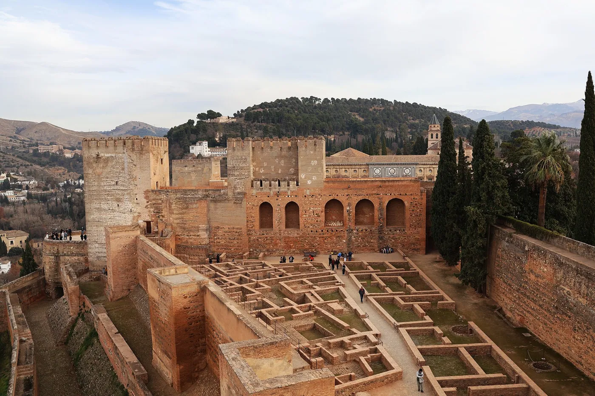
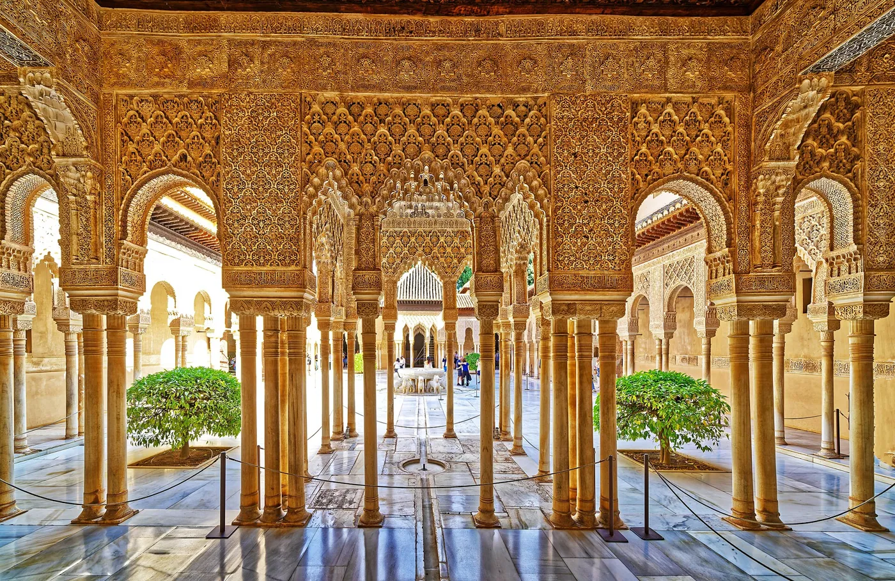
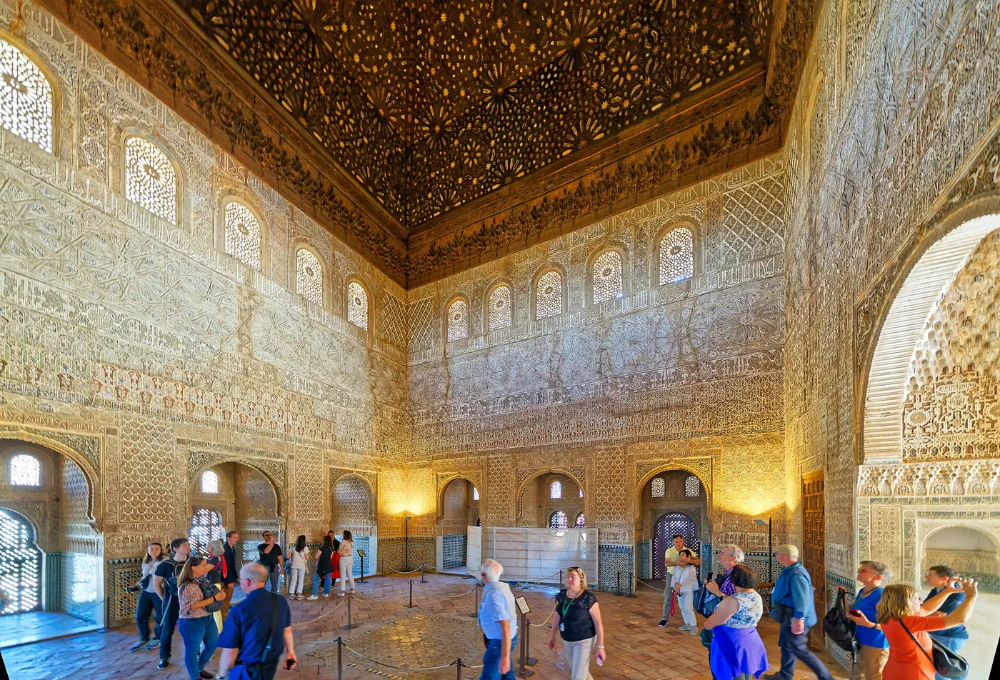
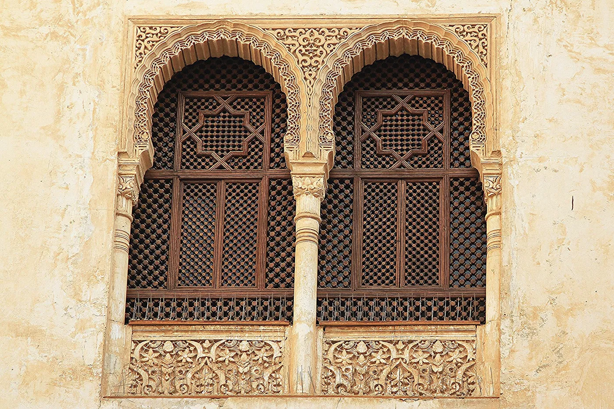
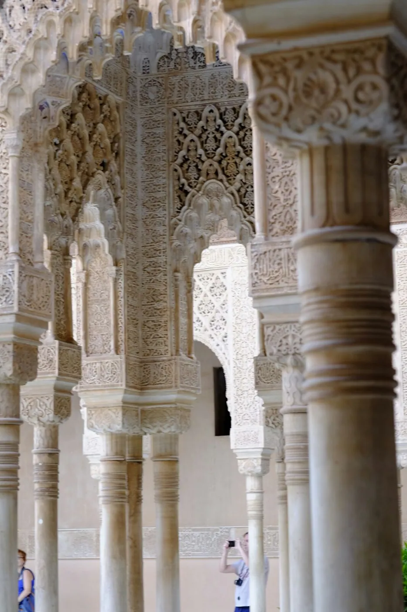
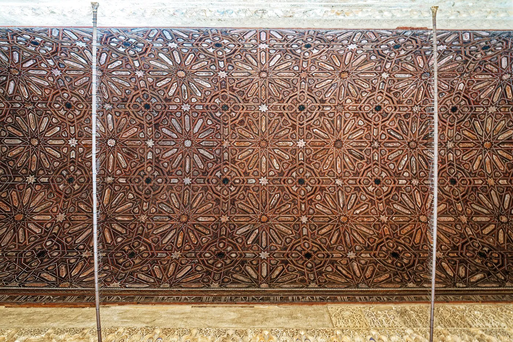

1/8 · Exterior · Tour of the AlhambraPhoto: Holger Uwe Schmitt · CC BY-SA 4.0 · source
2/8 · Exterior · Tour of the AlhambraPhoto: Holger Uwe Schmitt · CC BY-SA 4.0 · source
3/8 · Context · Barrio Castrense of Alhambra in January 2025, picture taken from Tore de la VelaPhoto: Wikiolo · CC BY 4.0 · source
4/8 · Interior · Tour of the AlhambraPhoto: Holger Uwe Schmitt · CC BY-SA 4.0 · source
5/8 · Interior · Tour of the AlhambraPhoto: Holger Uwe Schmitt · CC BY-SA 4.0 · source
6/8 · Interior · Tour of the AlhambraPhoto: Holger Uwe Schmitt · CC BY-SA 4.0 · source
7/8 · Detail · Tour of the AlhambraPhoto: Holger Uwe Schmitt · CC BY-SA 4.0 · source
8/8 · Detail · Tour of the AlhambraPhoto: Holger Uwe Schmitt · CC BY-SA 4.0 · sourcePalace · Historic precedent
Alhambra
Nasrid builders · Granada, Spain · 14th c.
Key featuresA sequence of courtyards, water and pattern, each room opening to the sky.
- Architect
- Nasrid builders
- Place
- Granada, Spain
- Year
- 14th c.
- Typology
- Palace
- Movement
- Historic precedent
- Region
- Europe
See it on the wall